Candidate List 20260925Last night — ZTF: 1,992 passed basic cuts (95 young) · LSST: 0 passed basic cuts (0 young)Previous Day Next Day
Section 1: New Sources (age<1d) Section 2: Old (1-5d) sources observed last nightplaceholder
Section 1: New Afterglow/FBOT Cands Last Night (0)
Section 2: Older Sources Observed Last Night (10)
0. [ZTF] ZTF26abwafvw (FBOT?) [Back to Top] [Share] [Trigger Swift] [Fritz Alert] [Fritz Source] [Lasair]RA, Dec: 273.95735, 42.77599 18h15m49.76s, 42d46m33.55sGalactic (l, b): 70.24161, 24.25288 ext(g-r) = 0.04


TESS: Sectors [ 26 40 52 53 54 74 79 81 119]
PS1: 0 sources in 3 arcsec
LegacySurvey: 1 sources in 3 arcsec Closest: d = 0.69 arcsec, 314.9 deg (east of north) photoz=0.96 (68% bounds 0.76, 1.16), type=REX peak abs mag (ext. corrected) = -25.28 (68% bounds -24.66, -25.78)


Extinction-corrected gr color:
From alerts: -0.43 +/- 0.23 mag
Rise Rate:
g: 1.06 mag/day
r: 0.77 mag/day
Fade Rate:
1. [ZTF] ZTF26abwacec (Afterglow?) [Back to Top] [Share] [Trigger Swift] [Fritz Alert] [Fritz Source] [Lasair]RA, Dec: 288.92824, -4.04148 19h15m42.78s, -4d-2m-29.34sGalactic (l, b): 32.08649, -7.23819 ext(g-r) = 0.708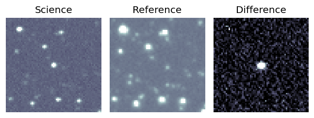
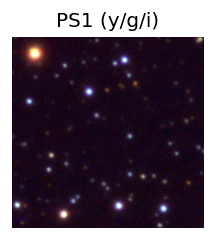

TESS: Sectors [54 80]
PS1: 0 sources in 3 arcsec
LegacySurvey: 0 sources in 3 arcsec
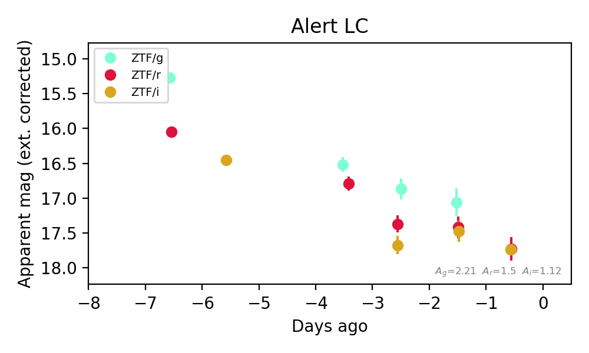
Extinction-corrected gr color:
From alerts: -0.36 +/- 0.25 mag
Extinction-corrected gi color:
From alerts: -0.42 +/- 0.25 mag
Extinction-corrected ri color:
From alerts: -0.01 +/- 0.18 mag
Consistent with synchrotron, g-r>0!
Rise Rate:
g: 2.94 mag/day
r: 2.78 mag/day
i: 0.79 mag/day
Fade Rate:
g: 0.39 mag/day
r: 0.28 mag/day
i: 0.26 mag/day
2. [ZTF] ZTF26abwmtnv (FBOT?) [Back to Top] [Share] [Trigger Swift] [Fritz Alert] [Fritz Source] [Lasair]RA, Dec: 21.53969, -14.62113 1h26m9.52s, -14d-37m-16.06sGalactic (l, b): 157.55447, -75.10652 ext(g-r) = 0.019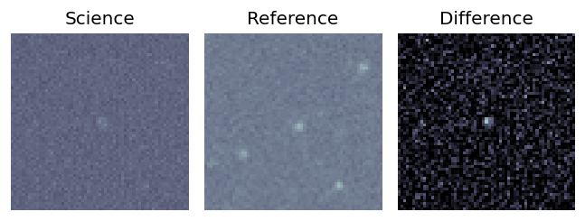
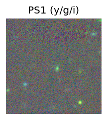
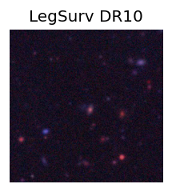
TESS: Sectors [ 3 97 108]
PS1: 0 sources in 3 arcsec
LegacySurvey: 1 sources in 3 arcsec Closest: d = 1.48 arcsec, 118.1 deg (east of north) photoz=0.6 (68% bounds 0.21, 1.15), type=REX peak abs mag (ext. corrected) = -23.63 (68% bounds -20.94, -25.34)
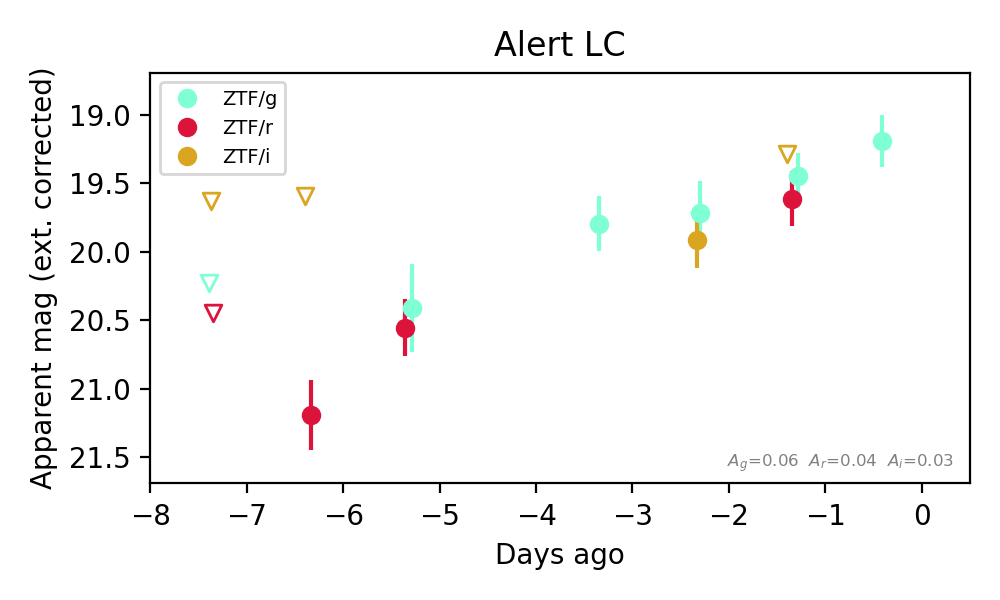
Extinction-corrected gr color:
From alerts: -0.16 +/- 0.27 mag
Extinction-corrected gi color:
From alerts: 0.17 +/- 99 mag
Extinction-corrected ri color:
From alerts: 0.33 +/- 99 mag
Consistent with synchrotron, g-r>0!
Rise Rate:
g: 0.23 mag/day
r: 0.28 mag/day
Fade Rate:
3. [ZTF] ZTF26abwqcyz (FBOT?) [Back to Top] [Share] [Trigger Swift] [Fritz Alert] [Fritz Source] [Lasair]RA, Dec: 51.13849, 46.72867 3h24m33.24s, 46d43m43.23sGalactic (l, b): 148.35436, -8.44611 ext(g-r) = 0.421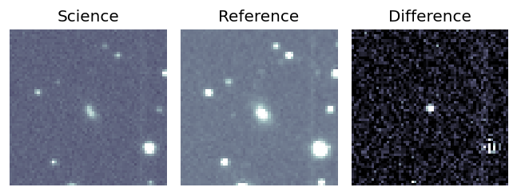
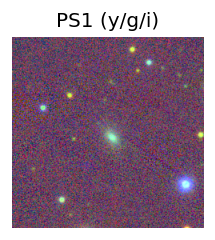

TESS: Sectors [18 58 86]
PS1: 1 source in 3 arcsec Closest: d = 2.29 arcsec photoz=0.08+/-0.01 peak abs mag = -19.88
LegacySurvey: 0 sources in 3 arcsec
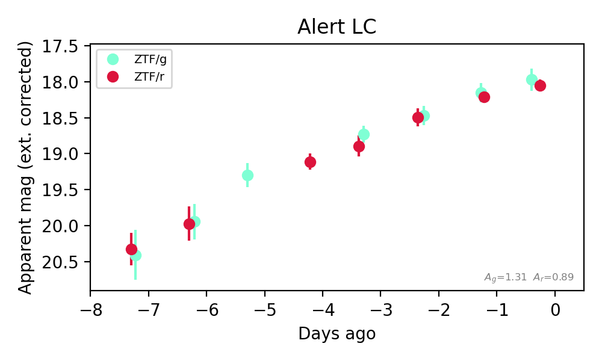
Extinction-corrected gr color:
From alerts: -0.08 +/- 0.18 mag
Consistent with synchrotron, g-r>0!
Rise Rate:
g: 0.32 mag/day
r: 0.31 mag/day
Fade Rate:
4. [ZTF] ZTF26abwqfcv (Afterglow?FBOT?) [Back to Top] [Share] [Trigger Swift] [Fritz Alert] [Fritz Source] [Lasair]RA, Dec: 48.84407, 25.01121 3h15m22.58s, 25d 0m40.37sGalactic (l, b): 159.7749, -27.37649 ext(g-r) = 0.148


TESS: Sectors [18 42 43 44 70 71]
PS1: 1 source in 3 arcsec Closest: d = 0.77 arcsec photoz=0.38+/-0.14 peak abs mag = -22.97
LegacySurvey: 0 sources in 3 arcsec

Extinction-corrected gr color:
From alerts: -0.23 +/- 0.17 mag
Extinction-corrected gi color:
From alerts: -0.32 +/- 0.17 mag
Extinction-corrected ri color:
From alerts: -0.09 +/- 0.14 mag
Consistent with synchrotron, g-r>0!
Rise Rate:
g: 0.39 mag/day
r: 1.45 mag/day
i: 0.29 mag/day
Fade Rate:
r: 0.79 mag/day
5. [ZTF] ZTF26abwqsgt (Afterglow?) [Back to Top] [Share] [Trigger Swift] [Fritz Alert] [Fritz Source] [Lasair]RA, Dec: 284.93743, -10.57876 18h59m44.98s, -10d-34m-43.52sGalactic (l, b): 24.41348, -6.62868 ext(g-r) = 0.394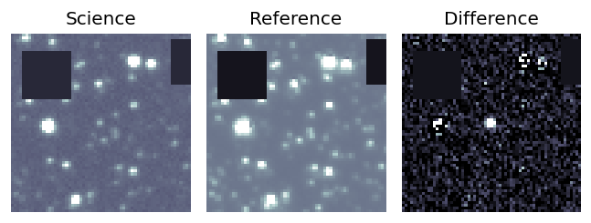
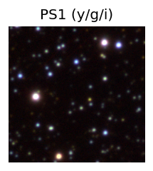

TESS: Sectors [80 92]
PS1: 0 sources in 3 arcsec
LegacySurvey: 0 sources in 3 arcsec
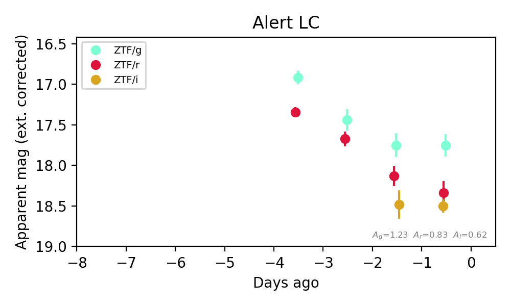
Extinction-corrected gr color:
From alerts: -0.58 +/- 0.2 mag
Extinction-corrected gi color:
From alerts: -0.75 +/- 0.16 mag
Extinction-corrected ri color:
From alerts: -0.16 +/- 0.17 mag
Consistent with synchrotron, g-r>0!
Rise Rate:
g: 0.35 mag/day
r: 0.38 mag/day
i: 0.14 mag/day
Fade Rate:
g: 0.31 mag/day
r: 0.35 mag/day
6. [ZTF] ZTF26abxcvtt (Afterglow?) [Back to Top] [Share] [Trigger Swift] [Fritz Alert] [Fritz Source] [Lasair]RA, Dec: 10.55798, 41.27681 0h42m13.92s, 41d16m36.50sGalactic (l, b): 121.07231, -21.5617 ext(g-r) = 0.488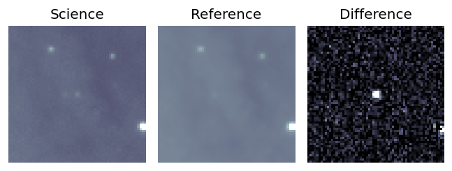
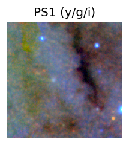

TESS: Sectors [17 57 84]
PS1: 1 source in 3 arcsec Closest: d = 1.66 arcsec photoz=0.42+/-0.02 peak abs mag = -24.88
LegacySurvey: 0 sources in 3 arcsec
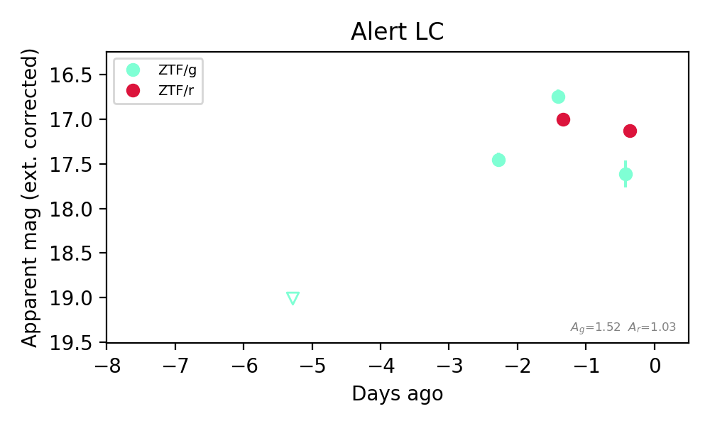
Extinction-corrected gr color:
From alerts: 0.48 +/- 0.16 mag
Consistent with synchrotron, g-r>0!
Rise Rate:
g: 0.58 mag/day
r: 0.08 mag/day
Fade Rate:
7. [ZTF] ZTF26abxjaeu (FBOT?) [Back to Top] [Share] [Trigger Swift] [Fritz Alert] [Fritz Source] [Lasair]RA, Dec: 132.94338, 36.26404 8h51m46.41s, 36d15m50.53sGalactic (l, b): 186.80901, 39.00778 ext(g-r) = 0.031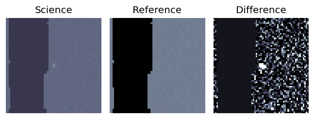
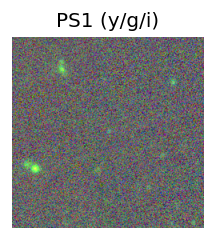
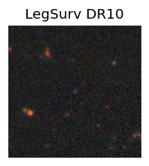
TESS: Sectors -1
SDSS (<15 kpc):Found SDSS phot-z: z=0.25; peak abs mag = -20.98
PS1: 0 sources in 3 arcsec
LegacySurvey: 1 sources in 3 arcsec Closest: d = 0.20 arcsec, 275.2 deg (east of north) photoz=0.39 (68% bounds 0.21, 0.69), type=REX peak abs mag (ext. corrected) = -22.12 (68% bounds -20.61, -23.64)
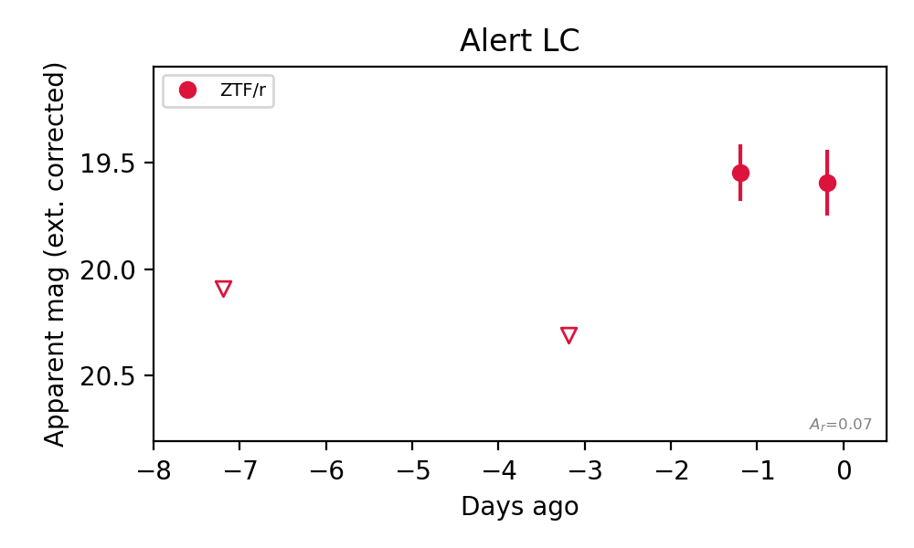
Rise Rate:
r: 0.38 mag/day
Fade Rate:
8. [ZTF] ZTF26abxjicd (FBOT?) [Back to Top] [Share] [Trigger Swift] [Fritz Alert] [Fritz Source] [Lasair]RA, Dec: 136.02306, 39.49409 9h 4m5.53s, 39d29m38.74sGalactic (l, b): 182.89338, 41.73631 ext(g-r) = 0.023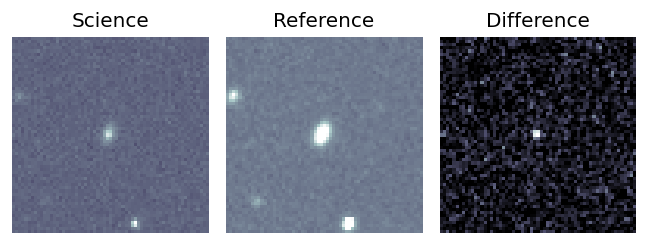
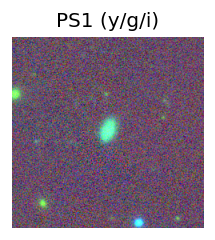
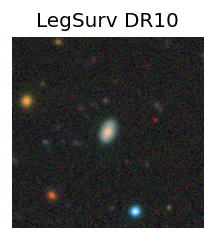
TESS: Sectors 21
SDSS (<15 kpc):Found SDSS phot-z: z=0.11; peak abs mag = -18.80
PS1: 0 sources in 3 arcsec
LegacySurvey: 1 sources in 3 arcsec Closest: d = 0.07 arcsec, 65.1 deg (east of north) photoz=0.15 (68% bounds 0.13, 0.17), type=SER peak abs mag (ext. corrected) = -19.61 (68% bounds -19.27, -19.86)
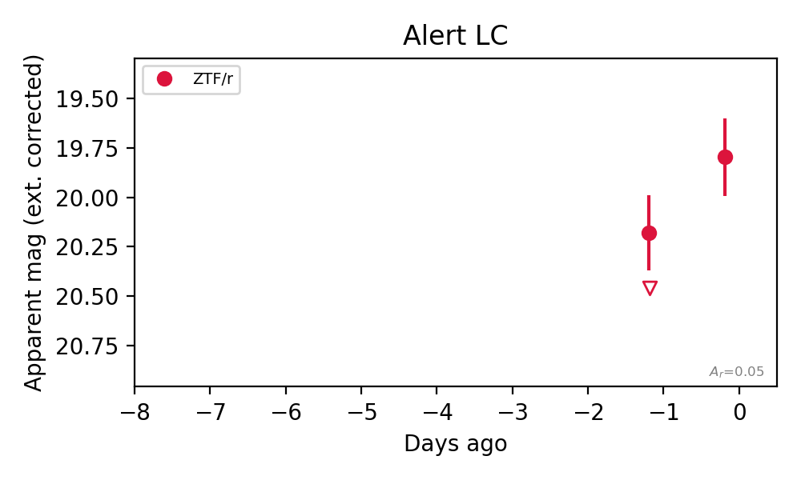
Rise Rate:
r: 0.66 mag/day
Fade Rate:
9. [ZTF] ZTF26abxjlva (FBOT?) [Back to Top] [Share] [Trigger Swift] [Fritz Alert] [Fritz Source] [Lasair]RA, Dec: 125.36769, 3.77606 8h21m28.24s, 3d46m33.83sGalactic (l, b): 220.07772, 21.7151 ext(g-r) = 0.027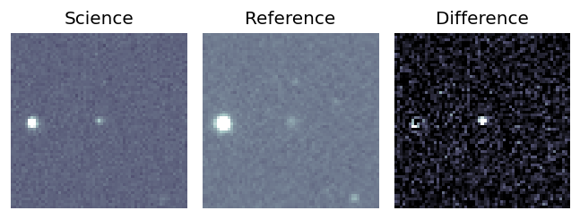
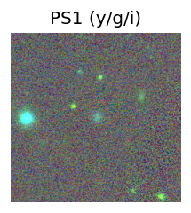
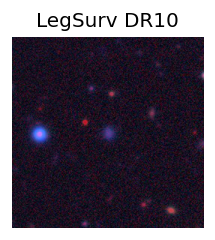
TESS: Sectors [ 7 61 88 112]
SDSS (<15 kpc):Found SDSS phot-z: z=0.07; peak abs mag = -18.38
PS1: 0 sources in 3 arcsec
LegacySurvey: 1 sources in 3 arcsec Closest: d = 0.58 arcsec, 216.6 deg (east of north) photoz=0.16 (68% bounds 0.09, 0.21), type=REX peak abs mag (ext. corrected) = -20.21 (68% bounds -18.79, -20.93)
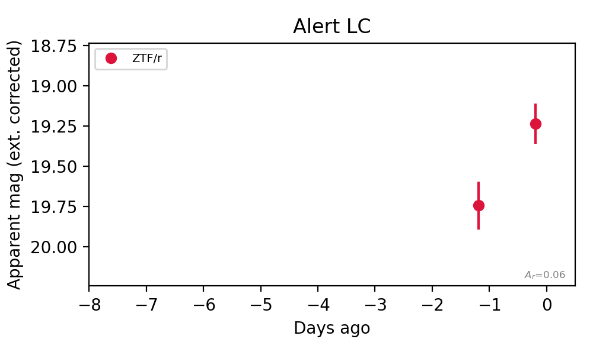
Rise Rate:
r: 0.51 mag/day
Fade Rate: